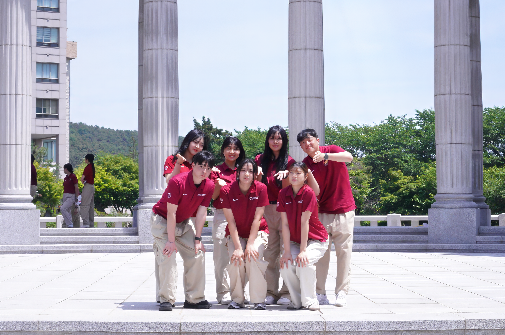
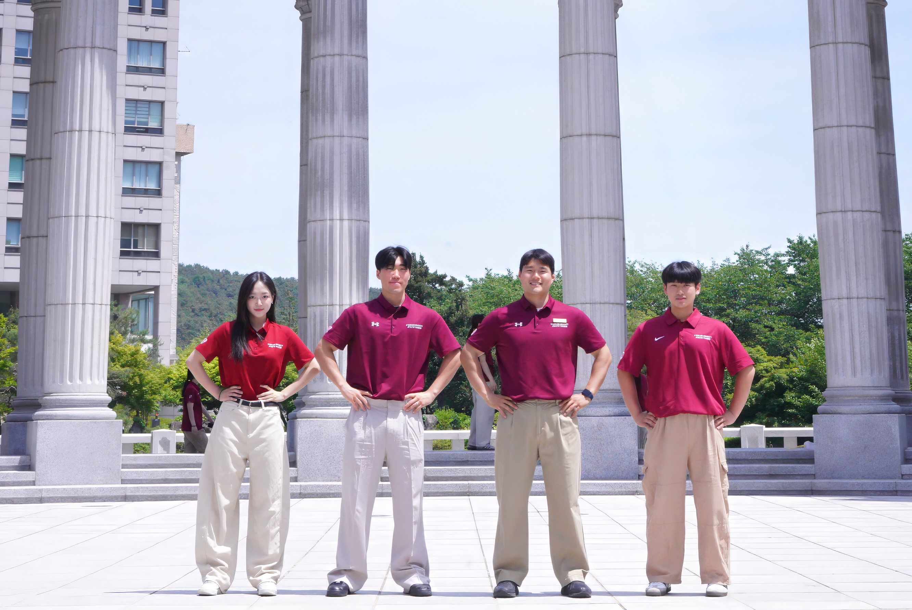
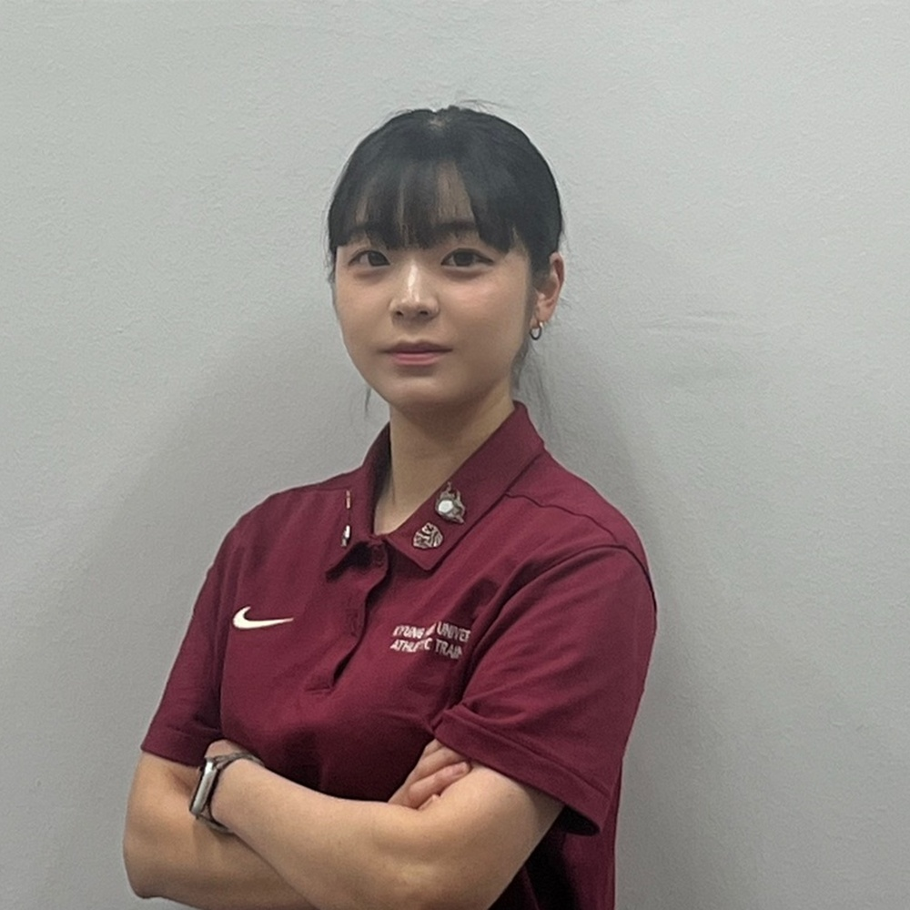
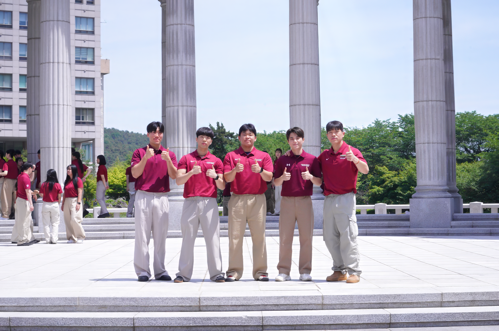
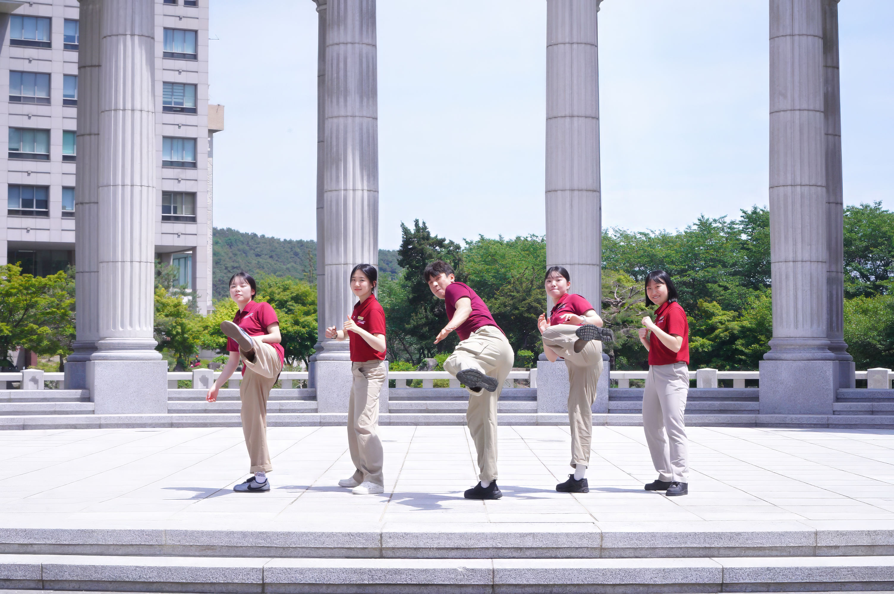

선승관에 위치한 경희대학교 Athletic Training Center는 체육부 선수, 교직원, 학생 모두를 위한 전문적인 재활과 컨디셔닝, 과학적 연구를 실천합니다.
BOOK CONSULTATION
선승관(B1)에 위치한 AT 센터는 체육대학 학부 및 대학원생들이 운영하는 실천적 학술 및 스포츠케어 공간입니다. 급성·만성 손상 재활부터 퍼포먼스 향상까지 선수들의 안전한 필드 복귀를 책임집니다.
LEARN MORE경희대학교 AT 센터는 교육(Education), 연구(Research), 서비스(Service) 세 부문의 유기적인 시너지를 통해 국내 최고 수준의 스포츠의학적 역량을 전파하고 차세대 임상 전문가를 양성합니다.
OUR SERVICES


"선수들의 부상 예방과 재활을 위해 밤낮없이 고민하며 함께 땀 흘린 시간들이 경희대학교 AT 센터의 가장 값진 자산입니다. 최고의 스포츠의학 리더로 성장하겠습니다."
경희대학교 체육대학 AT 센터가 축적해 온 독보적인 스포츠 케어와 학술 연구의 발자취입니다.
급성·만성 손상 재활, 컨디셔닝, 퍼포먼스 향상, 테이핑 누적 케어 실적
Observation 100시간 실무 과정 및 정기 학술 세미나 전 과정 이수자
국제 저명 학술지(SCI급) 및 KCI 등재 스포츠의학 전문 학술 논문

축구부, 농구부, 야구부, 배구부, 럭비부, 골프부, 배드민턴부, 핸드볼부, 태권도 시범단·겨루기부·품새부, AT Center까지 12개 부서 전담 및 보조 AT가 최상의 경기력을 서포트합니다.
VIEW SPORTS ROSTER스포츠 손상 재활, 퍼포먼스 컨디셔닝 자문, 센터 실습 및 교육에 대해 문의해 주시면 담당 연구원과 전담 AT가 상세히 상담해 드립니다.

최고의 스포츠의학 전문 지식과 따뜻한 임상 케어가 여러분의 건강하고 안전한 운동 복귀를 응원합니다.
BOOK NOW